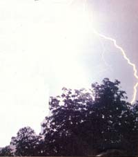

Advance preparation can disarm disaster.
Tornadoes, hurricanes, blizzards, earthquakes, volcanic eruptions, forest fires, mud slides, power outages, toxic leaks-no area of the country is immune to disaster. All of us, countryfolk or urban dwellers, should acquaint ourselves with the types of emergencies most likely to occur where we live, and make some advance preparations.
Preparedness for long-term catastrophies, such as famine, drought, or nuclear war, requires more extensive information and planning than I'll cover in this article. I'm going to focus here on short-term, yet potentially life-threatening, emergencies that last from a day to a week.
Getting prepared for such situations is not expensive. With the exception of food, warm clothing, and a good first-aid kit that we already had on hand, my husband and I obtained our emergency gear for less than $70 by buying a kerosene heater and lamp, propane cookstove, fuel tanks, a battery-powered AM-FM radio, and insulated underwear at yard sales and flea markets.
EMERGENCYStore one gallon of water a day per person in plastic jugs.
Disaster preparedness means becoming well informed, establishing a plan, and accumulating items for basic comforts ahead of time. This paid off for us in the late winter of 1983 when we spent two days without electricity during a huge snowstorm that crippled the Southeast. We closed off all rooms and moved into the kitchen during the day, where our second-hand kerosene heater kept us a toasty 72°F, even at its lowest setting. Our two-burner propane cookstove provided quick, hot meals, and the kerosene lamp was a blessing when darkness fell. We listened to weather reports on our batterypowered radio, played cards, and read.
But not one of the neighbors in our quiet residential community was prepared for even this small, short-term emergency. We opened our home to them for warmth, while our propane cookstove moved up and down the block. If this had been a more serious situation lasting a week or longer, it would have been impossible for us to provide enough facilities for all our neighbors-and some of the less healthy retirees could have been in trouble.
Preparing for the unexpected falls into two categories: emergencies that permit you to stay at home and those requiring immediate or delayed evacuation. To be ready for the first situation, you'll need to have the following on hand:
Food: Have enough for at least one week, preferably two. Canned meats, fish, fruits, vegetables, and instant food requiring minimal preparation are best, particularly those that can be eaten unheated if necessary. A supply of multivitamins can help you maintain adequate nutrition.
Water: This is one of the most important considerations. Plan on one gallon a day per person. (Juices and liquids in canned fruits and vegetables may be considered part of your daily intake.) Clean plastic milk jugs are fine for water storage. You can also use plastic bags inside garbage cans. Commercially bottled water is relatively inexpensive, particularly for a family of two. If your other sources are depleted, you can drain the toilet tank and water heater. (If contamination is a possibility, turn off the inlet valve to your home first.) Stock some water purification tablets, or boil contaminated water for 15 minutes and add two or three drops of chlorine bleach (Clorox brand recommended) to each quart.
Another water purifier- pure, reagent grade iodine crystals-can be ordered through drugstores. Make certain, however, that you shake a water-iodine mixture well, because accidentally swallowing an undissolved crystal or inhaling its gaseous fumes could cause serious illness. Keep in mind, too, that iodine and chlorine bleach do not kill intestinal parasites like Giardia lamblia, commonly found in lakes and streams in North America. (Boiling does.)
You might consider getting a Katadyn pocket filter, which costs around $170 and is about the size of a flashlight. It pumps water through a special ceramic filter with a max imum pore size of.2 microns. All particles and pathogens larger than this (including all protozoa and bacteria and some viruses) are physically prevented from passing through.
Heat source: If you don't have a woodstove or fireplace, a portable kerosene or propane heater with sufficient fuel for one or two weeks is a necessity (store extra fuel properly). You may have to limit your living space to one or two rooms for comfort and to conserve fuel.
Cookstove: A portable propane or gas stove with sufficient fuel for one to two weeks is a great disaster beater. Keep meals simple and cooking time to a minimum to prolong your fuel supply. And provide adequate ventilation to avoid excessive buildup of toxic fumes.
Lighting: Kerosene lamps, candles, flashlights, and even small cans filled with corrugated paper and melted paraffin can provide lighting.
Portable generators: Although even a small generator is a major investment for most families, the portable power packs can also be used for activities such as on-site construction and family camping. For under $1,000 you should be able to purchase a lightweight (around 100 pounds), reliable gasoline generator that will handle just about any need, from providing essential lighting to powering a range-top stove, a furnace blower, or a well pump. Realistically, it'll take at least 1,800 watts to cook or pump water, often at 220 volts. Check to see if your generator is, or can be, equipped to supply dual voltage. If you're setting your sights a bit lower, even a 1,000-watt or smaller unit can provide refrigeration, microwave cooking, or lighting. Nearly all such generators come with a 12-volt DC outlet for charging auto batteries in addition to safety and convenience features such as noise reduction, circuit protection, oil-level warning systems, and large fuel tanks.
EMERGENCY Familiarize yourself with survival and first-aid books beforehand.
Sanitation: If the water supply is interrupted or sewer mains broken, you can use covered metal or plastic garbage containers as toilet facilities. Add small amounts of chlorine bleach or other disinfectant periodically. If you must use the outdoors, dig holes or trenches at least 12 inches deep to bury human waste, and take care not to contaminate a water supply.
First-aid supplies: A well-equipped first-aid kit is a must. This should include a firstaid manual. Survival books are also helpful-if you're familiar with their contents before an emergency occurs. (Your local library can provide additional reading on short-term disaster planning.)
Preparedness for an emergency evacuation requires different plans. In most instances, there's time to grab a previously packed emergency travel bag that, if not always a lifesaver, will certainly provide a measure of comfort and well-being. This could be a knapsack, a duffel bag, or simply a large flight bag. Required items are one quart of water per person in an unbreakable container; a change of clothing (rotate clothes seasonally); flashlight and batteries; multivitamins; no-cook food, such as dried fruits, granola bars, peanut butter, nuts, crackers, and small cans of meat, fish, stews, and soups; matches; can opener; first-aid kit (this can be the same kit used if you remain at home, but keep it in your travel bag); comb, brush, toothbrush and toothpaste; appropriate masks and goggles (seal the air openings with cotton) in case of toxic pollution; and a piece of lightweight plastic large enough to use as a ground cover.
Less important but nice to have are a battery-powered radio (preferably AM-FM); blanket or sleeping bag; extra jacket; toilet tissue; soap, playing cards, lightweight books, writing paper and pencils; extra gloves; and a separate package of high-energy foods.
If you're able to evacuate by car, your travel bag can be heavier than if you have to go on foot. You may wish to pack the additional food and other less essential items in a sepa rate plastic bag, placing it on top of your required contents, so it can be removed quickly without confusion.
Don't let that feeling of "it can't happen to me" lull you into a false sense of security. As a wise person once said, "It's better to have it and not need it, than to need it and not have it."
In 1985 alone, over 700 tornado touchdowns were reported across the U.S. Over 90% of those packed winds between 73 and 207 mph. Tornadoes have occurred in all 50 states and during every season, killing nearly 3,000 people in the past decade. Even destructive thunderstorms-capable of spawning full-scale tornadoes-can produce dangerous straight-line winds in excess of 60 mph, and coastal states are subject to hurricanes which create winds of even greater velocity.
So you'd think that guidelines for constructing a working storm shelter would be readily available from private or public sources, but, as Wisconsin architect Richard Acott discovered last year, they aren't. Acott spent several months researching, engineering, and developing plans for a storm shelter designed to hold 32 adults, or the population of a small mobile home park.
In an effort to extend this service to individuals and single families, MOTHER's staff has worked with Mr. Acott to make available to our readers a set of plans for a 6' X 8', eight-person, treated-wood shelter, designed for do-it-yourself construction and budgeted to cost around $700 in new materials. Because of the forces created by highvelocity winds, sudden atmospheric pressure differentials, and flying debris, the shelter should be located below ground and protected by earth berming. It is designed to withstand winds of 260 mph, requires minimal maintenance, and can be used as a storage area or disguised with landscaping or playground equipment, if you wish.
The $15 plans package consists of 1) a working blueprint sheet with floor plan, elevations, and all necessary details, and 2) a 30-page booklet which addresses everything from subsoils to ventilation to dampproofing and drainage; includes a materials list; and contains a wealth of information on tornado characteristics, emergency preparation, and disaster-recovery procedures. Turn to page 113 for information on how to order your own set of storm shelter plans.
|
 |
|
|